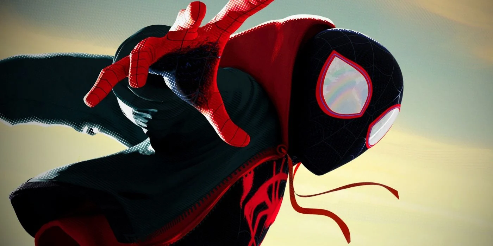

About Miles
Miles is the best Spiderman, no contest. Miles is a 13 year old afro-purtorican and Brooklyn native who is trying to figure out how to be Spiderman after Peter Parker dies on the job. After being bitten by a radio-active spider from an alternate universe, Miles has to help all the other Spider "people" find their way bact to their respective universes, learning to be a hero along the way.
Miles finally figuring out how to swing using webs, and going after his friends to help them get home with his new found abilities.
Miles' Characteristics
- He's super uncordinated
- Has curly hair
- wore his own merch before he got a real suit
Miles' Friends
Miles is the type of person who knows everybody and everybody knows him, but he has a few special individuals he considers true friends. Peter B. Parker, and Gwen Stacy being his best firends. Click the link below to learn more about them!